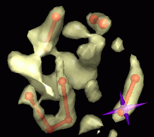

on the right.
on the right.
The Phantom Force Feedback extension of Chimera provides an interface to the Phantom haptic device (Windows only). The device is a robotic arm that is attached to a computer and used as a pointer in three dimensions, like a mouse is used as a pointer in two dimensions. It is most useful in conjunction with stereo. The user must have connected the device and installed the OpenHaptics library and Phantom device driver.
In Chimera, the Phantom is generally used to guide placement of markers within volume data displayed by Volume Viewer. It can also be used to trace paths and/or move models in the absence of volume data. Although there will not be force feedback in such cases, the increased degrees of freedom provided by the device as compared to a mouse can be very helpful.
| The Phantom Device |
|---|
SensAble Technologies manufactures several models of the Phantom; the Desktop model is described here.
The endmost segment of the three-segment arm is called the stylus. The pointer position corresponds to the joint that attaches the stylus to the rest of the arm. The stylus has a single button on it. With the pointer at a fixed position, the stylus can adopt many orientations. It can be tilted horizontally and vertically and twisted. The three pointer positional coordinates and three stylus orientational coordinates make the Phantom a 6-degree-of-freedom input device.
Motors allow the Phantom to exert force on a user's hand. The Desktop model exerts force in the X, Y, and Z dimensions; other models can also exert torques. The forces are specified by the computer program controlling the Phantom and give the feeling of interacting with virtual objects in three dimensions. In the present application, the force is toward more positive data values (brighter regions of the volume) and is proportional to the data value gradient.
There are several ways to start Phantom Force Feedback, a tool in the Volume Data category (including from the Volume Viewer Tools menu).
Simply opening volume data in Chimera automatically starts Volume Viewer. The Volume Tracer tool will start automatically when needed, but it is also fine to have started it earlier. Stereo viewing is recommended.
Enabling cursor makes a cursor appear in the Chimera graphics window and initiates communication with the Phantom device. Cursor shape options:
|  |
Cursor size is expressed in the current display units and refers to the cross line length, sphere diameter, or for the jack, the distance between the tips of opposing spikes. It is necessary to press return (Enter) to apply a new size. Cursor color can be edited using the adjacent color well. A cursor color that contrasts with the data display color is usually best.
Disabling cursor halts communication with the Phantom device.
Enabling forces turns on force feedback based on the current set of data shown with Volume Viewer (see also the key command f). When force feedback is off, the Phantom can still be used as a pointer.
The force is directly proportional to the data gradient and pushes toward more positive data values. At each grid point, the gradient in each dimension is half of the difference between the values at the two flanking grid points. For example, if the grid point indices are (i,j,k), the X component of the force is obtained by subtracting the value at (i+1,j,k) from the value at (i-1,j,k) and dividing by 2. Thus the force is calculated relative to grid point indices; the physical spacing of the grid points (grid resolution) is not used. When the pointer is not exactly at a grid point, the force is interpolated from the gradients at the eight surrounding grid points.
Clicking the Settings button
reveals additional parameters and information.
The dialog can be collapsed again by clicking the small button
on the right.
Phantom physical range (mm) (default 200, about 8 inches) controls the size in each dimension of a cube where the pointer joint can be placed. The physical cube is mapped into the Chimera graphics space so that its back face just fits within the viewing area at the far clipping plane and its center is halfway between the near and far clipping planes. The mapping is recalculated according to these rules whenever the view is scaled or the clipping planes are moved. When the clipping planes are close together, the physical cube may extend in front of the near clipping plane and behind the far clipping plane. The cursor will not be visible when the pointer is moved into these regions.If the Chimera window is not square, parts of the viewing area will be beyond the reach of the Phantom cursor (the right and left edges if the Chimera window horizontal dimension is larger, the top and bottom if the Chimera window vertical dimension is larger). Regions in front of the near clipping plane and behind the far clipping plane will also be unreachable. When parts of the volume display are not reachable, moving the volume display or the clipping planes can solve the problem.
The Maximum force (lbs) setting (default 0.4) prevents excessive forces from being sent to the Phantom. If the calculated force exceeds this value, the maximum force is used instead. The Phantom Desktop can exert a maximum force of 1.45 lbs (6.4 N) and sustain a force of 0.4 lbs (1.7 N) for 24 hours. If its maximum is exceeded, the Phantom will generate an error message and disable itself. Disabling and re-enabling cursor may restore a usable state; if not, it may be necessary to rerun the configuration program that came with the Phantom device.
Auto-adjust force constant (on by default) continually adjusts the force constant so that the largest gradient encountered so far generates the force specified as the maximum. The force constant automatically shrinks as larger gradients are encountered when this option is on.
The Force constant controls the scaling of force relative to gradient. The proper setting depends on the data gradient magnitudes and the user's comfort level. The gradient is multiplied by the force constant to calculate a force in Newtons (1 Newton = 0.2248 lbs). Setting the force constant by entering a number or moving the slider turns off its automatic adjustment.The bottom part of the dialog shows information on the pointer position and force components.
Pressing the button on the Phantom stylus places a marker at the current pointer position using Volume Tracer. Clicking the Markers button opens the Volume Tracer dialog. While not needed for placing markers, the dialog controls various aspects of markers (color, size) and the links connecting them. Its Mouse mode options to place/move markers are ignored while the Phantom is being used.
Since pressing the button on the Phantom stylus can jiggle the pointer position and interfere with proper placement, users may want to use the key command m instead. The key command p allows moving a marker with the Phantom.
Enabling key commands allows use of the following shortcuts when the mouse cursor is in the main Chimera window:
Only available for Windows. Attempts to use Phantom Force Feedback on platforms other than Windows will produce the error message "Could not load Chimera _phantomcursor library." The user is responsible for downloading and installing the SensAble OpenHaptics library and Phantom device driver. The tool has been tested with Phantom driver version 4.2.49 and OpenHaptics Academic Edition version 2.0.
Phantom vibrates or buzzes. Large changes in force over small distances can lead to aberrant vibrations. Solutions include zooming in (scaling the view up) to spread out the gradient and decreasing the maximum force setting. For example, imagine a force that is constant and upward below a plane and zero above the plane. When the pointer is pushed slightly below the plane, the force pushes it back above the plane. This leads to an oscillation or buzzing effect when the user is applying a downward force that is less than the upward force exerted by the Phantom. The buzzing is caused by the finite force update rate (1000 Hz). If the user applies a greater downward force, the pointer will move past the interface. A similar situation occurs at the steep walls of a potential well corresponding to a bright spot in the data.
Phantom overheats. When the Phantom overheats, it generates a warning message and will not function until its motors have cooled sufficiently. Cooling can take from 10 minutes to about an hour. Overheating can occur when the force constant is too high and there is frequent application of the maximum force limit.
Phantom maximum force exceeded. See above.
Other 3D devices. The Chimera Cursor_Model and Force_Field classes implemented in _phantom.so and _phantom.dll contain no Phantom-specific code, so that it will be possible to use other 3D input devices for marker placement.
Pruning Data in 3D. Marker placement and path tracing with the mouse are fairly easy. Because the Phantom is expensive, it is probably worth exploring 3D applications for which a standard mouse is poorly suited. The Phantom may be especially useful for pruning multidimensional data; it could be used as a 3D data eraser.
Possible new features. Key commands may be added to: